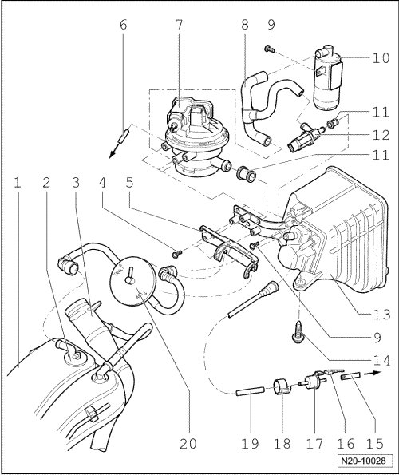
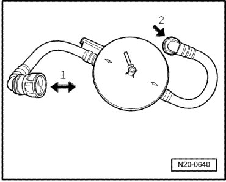

EVAP System Assembly Overview
EVAP System Assembly Overview

1 Expansion tank
• Right side
2 Gravity valve
3 Fuel filler tube
4 Bolt, 5 Nm
5 Bracket
6 Vacuum line
• For Leak Detection Pump (LDP) (V144) vacuum supply.
• To vacuum connection at intake manifold.
• Ensure seated tightly.
7 Leak Detection Pump (LDP) (V144)
• Checking fuel supply system for leaks, refer to --> [ Fuel/EVAP System, Checking for Leaks ].
• Black connector, 3 pin.
8 Connecting hose
• Between air filter, LDP (V144) and Evaporative Emission (EVAP) canister purge solenoid valve (N115)
• Ensure seated tightly.
9 Bolt, 5 Nm
10 Air filter housing
• Clean if contaminated.
11 Rubber bushing
• Note installation position.
• Replace if damaged.
12 Evaporative Emission (EVAP) Canister Purge Regulator Valve 2 (N115)
• Black connector, 2-pin
13 EVAP canister
• Component location: in right rear wheel housing.
14 Bolt
• Quantity: 3
• 9 Nm
15 Vent line
• To vacuum connection at intake manifold.
• Ensure seated tightly.
16 Connector
• Black, 2 pin
17 Evaporative Emission (EVAP) Canister Purge Regulator Valve 1 (N80)
• Note installation position.
18 Rubber bracket
• Note installation position.
19 Vent line
• Ensure seated tightly.
20 Pressure retention valve
• Function, refer to --> [ Pressure Retention Valve Function ]
Pressure Retention Valve Function

The pressure retention valve is opened via the gravity valve (on the expansion tank) for flow in both directions. - Arrow 1 - is the side toward the expansion tank.
On the other side, it is only open to one direction of flow. - Arrow 2 - is the side toward the EVAP canister.